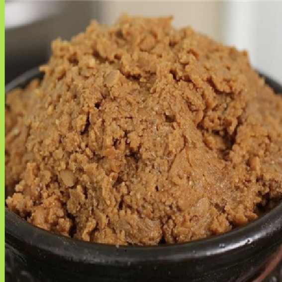
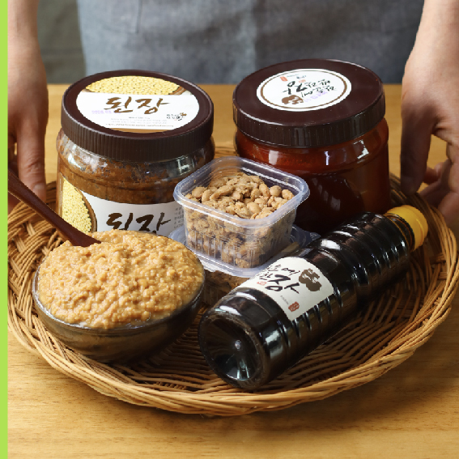
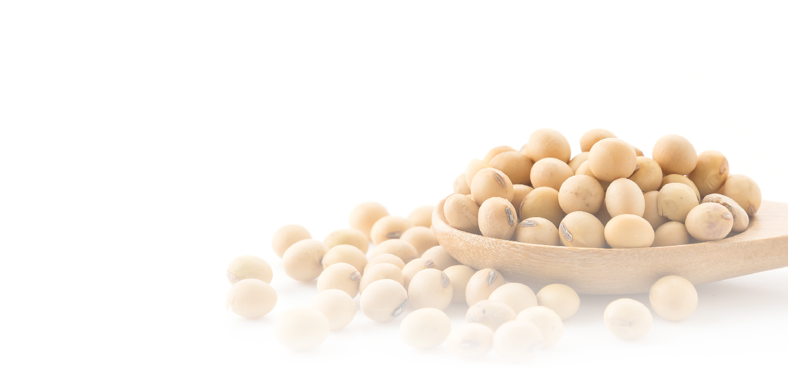
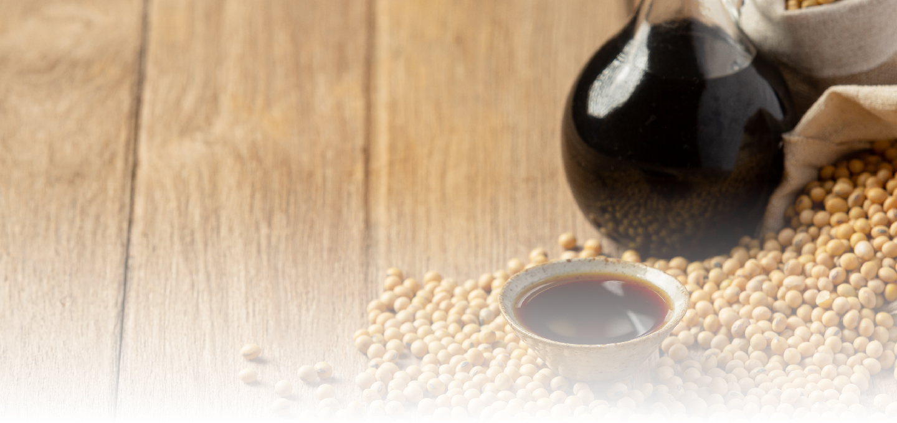
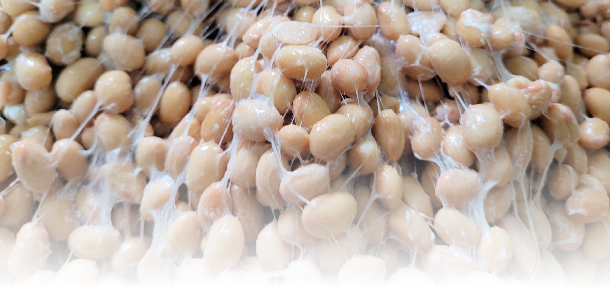

As people reach middle age, the risk of chronic diseases increases, and interest in healthy foods grows.
Hanbanjang was founded on the belief that a healthy table leads to a healthy family, with the hope of protecting health through the steady consumption of wholesome ingredients.
-

When the table becomes healthier, the family becomes healthier.In today’s busy lives, more people are replacing meals with convenient foods such as fast food and instant meals. As a result, the rate of chronic diseasescontinues to rise in middle age, even among those without a family history.
-

Healthy food made simply at home.Doenjang is Korea’s traditional fermented food, but many people believe it is difficult to make. That is why we developed a way for anyone to make it easily at home.
-

01 Fermented foods valued for their wellness benefitsHanbanjang crafts its doenjang using premium anchovy fish sauce from Baengnyeongdo and Al-meju fermented with yellow koji culture.
-

02 Unboiled Raw Soy SauceA soy sauce that overcomes the shortcomings of traditional soy sauce, which can develop an astringent taste over time. As it ages, its color deepens along with its rich umami flavor.
-

03 Salt-Free Cheonggukjang
Loved by EveryoneMade with Bacillus subtilis, a beneficial bacteria known for its resistance to heat and stomach acid.